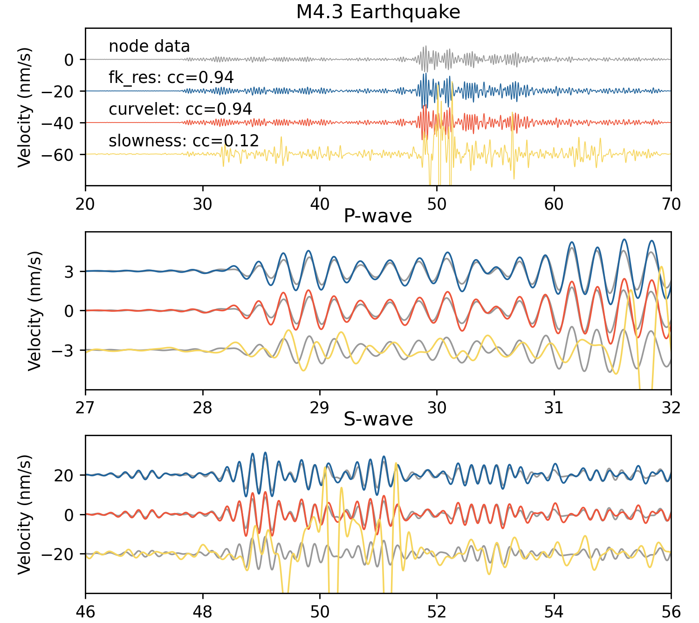

应变-速度转换
DAS测量应变或应变率，而传统地震学研究中通常使用位移、速度或加速度。应变可以通过乘以视相速度来转换为粒子速度。基于这个原理，DASPy集成了三种将应变/应变率转换为速度/加速度（以下统称应变-速度转换）的方法： FK重缩放法 、 曲波变换法 和 时域慢度检测法 。
备注
该节示例数据为Brady地热试验田一段DAS记录的M4.3地震信号，可从 https://raw.githubusercontent.com/HMZ-03/DASPy-data/main/Brady_DAS_M4.3_2688_2826.pkl 下载，用于对比的165号节点地震仪在同时间的记录，可从 https://raw.githubusercontent.com/HMZ-03/DASPy-data/main/Brady_node_M4.3_165.sac 下载，DAS第2781道和该节点地震仪距离为2.6米。DAS数据已经做的预处理有：截取某一线性段（第2688至2826道）、去除授时误差（1.048秒）、将应变率积分为应变、从1000Hz降采样至500Hz、带通滤波至1~5Hz、截取至地震发生后19.99秒至70.01秒（允许在和节点地震仪数据做互相关时有±0.01秒的时差）；节点地震仪已经做的预处理有：旋转至DAS轴向分量、滤波至1~5Hz、截取地震发生后20秒至70秒。通过以下方式读取（需要安装 ObsPy ）：
>>> import obspy
>>> from daspy import read
>>> st = obspy.read('Brady_node_M4.3_165.sac')
>>> sec = read('Brady_DAS_M4.3_2688_2826.pkl')
FK重缩放法
FK重缩放法通过将FK域中的每个点乘以其相应的视速度（FK域中的斜率）实现应变-速度转换。
>>> sec_fk = sec.copy().fk_rescaling(fmax=(5, 6))
曲波变换法
曲波变换的基函数在FK域中表现为具有一定速度范围的楔形，曲波变换法将每个曲波系数乘以其基函数的中值速度，以实现应变-速度转换。。
>>> sec_cv = sec.copy().fk_rescaling(fmax=(5, 6))
时域慢度检测法
时域慢度确定方法通过搜索最大相似度来获得每个时间步的视速度。
>>> sec_ts = sec.copy().slant_stacking(L=10, frqlow=1, frqhigh=5, channel=2781) # 为节省算力，仅计算2781道的速度并保存进Section实例
三种方法的对比
定义一个用于计算互相关系数及时移的函数：
>>> import numpy as np >>> def X_corr(a, b): >>> M, N = len(a), len(b) >>> b = (b - np.mean(b)) / np.std(b) / N >>> cc = np.zeros(M-N+1) >>> for i in range(M-N+1): >>> a_p = a[i:i+N] >>> a_p = (a_p - np.mean(a_p)) / np.std(a_p) >>> cc[i] = np.correlate(a_p, b, 'valid')[0] >>> return np.argmax(cc), max(cc)绘制三种方法的应变-速度转换结果：
>>> import matplotlib.pyplot as plt >>> node_data = st[0].data >>> nt = len(node_data) >>> dt1, cc1 = X_corr(sec_fk.channel_data(2781), node_data) >>> fk_data = sec_fk.channel_data(2781)[dt1:dt1+nt] >>> dt2, cc2 = X_corr(sec_cv.channel_data(2781), node_data) >>> cv_data = sec_cv.channel_data(2781)[dt2:dt2+nt] >>> dt3, cc3 = X_corr(sec_ts.channel_data(2781), node_data) >>> ts_data = sec_ts.channel_data(2781)[dt3:dt3+nt] >>> >>> fig, ax = plt.subplots(3, 1, figsize=(6, 8), dpi=250) >>> t = np.arange(nt)/sec.fs + 20 >>> c = ['#999999', '#20639B', '#ED553B', '#F6D55C'] >>> ax[0].set_title('M4.3 Earthquake') >>> ax[0].plot(t, node_data, c=c[0], lw=0.5) >>> ax[0].plot(t, fk_data-20, c=c[1], lw=0.5) >>> ax[0].plot(t, cv_data-40, c=c[2], lw=0.5) >>> ax[0].plot(t, ts_data-60, c=c[3], lw=0.5) >>> ax[0].text(22, 5, f'node data') >>> ax[0].text(22, -15, f'fk_res: cc={cc1:.2f}') >>> ax[0].text(22, -35, f'curvelet: cc={cc2:.2f}') >>> ax[0].text(22, -55, f'slowness: cc={cc3:.2f}') >>> ax[0].set_xlim([20, 70]) >>> ax[0].set_ylim([-80, 20]) >>> ax[0].set_yticks(np.arange(-60, 20, 20)) >>> ax[0].set_ylabel('Velocity (nm/s)') >>> >>> ax[1].set_title('P-wave') >>> ax[1].plot(t, node_data-3, c=c[0], lw=1) >>> ax[1].plot(t, node_data, c=c[0], lw=1) >>> ax[1].plot(t, node_data+3, c=c[0], lw=1) >>> ax[1].plot(t, fk_data+3, c=c[1], lw=1) >>> ax[1].plot(t, cv_data, c=c[2], lw=1) >>> ax[1].plot(t, ts_data-3, c=c[3], lw=1) >>> ax[1].set_xlim([27, 32]) >>> ax[1].set_ylim([-6, 6]) >>> ax[1].set_yticks(np.arange(-3, 6, 3)) >>> ax[1].set_ylabel('Velocity (nm/s)') >>> >>> ax[2].set_title('S-wave') >>> ax[2].plot(t, node_data+20, c=c[0], lw=1) >>> ax[2].plot(t, node_data, c=c[0], lw=1) >>> ax[2].plot(t, node_data-20, c=c[0], lw=1) >>> ax[2].plot(t, fk_data+20, c=c[1], lw=1) >>> ax[2].plot(t, cv_data, c=c[2], lw=1) >>> ax[2].plot(t, ts_data-20, c=c[3], lw=1) >>> ax[2].set_xlim([46, 56]) >>> ax[2].set_ylim([-40, 40]) >>> ax[2].set_yticks(np.arange(-20, 40, 20)) >>> ax[2].set_ylabel('Velocity (nm/s)') >>> >>> plt.tight_layout() >>> plt.show()
{kind=link}